1. 产品能做什么
小光是装在电脑上的智能助理：左侧选模块，中间对话或配置。日常可以：
| 您想做的事 | 去哪个模块 |
|---|---|
| 提问、写材料、看思考与工具过程 | 新对话 / 会话列表 |
| 换模型、加提供商、看 Token 用量 | 模型参数 |
| 多个助理分工、指定对话对象 | 智能体 |
| 接到企业微信、飞书、钉钉等 | 频道配置 |
| 浏览、开关、安装技能 | 技能管理 |
| 每天/每周自动跑一段提示词 | 定时任务 |
| 打开量子计算实验平台 | 科研工具 |
| 查公司文档、绑定量库 | 企业知识库 |
| 主题、语言、开机启动、桌面气泡 | 系统设置 |
底栏出现 网关已连接 后，对话、技能运行时状态、定时任务和频道才能稳定使用。未连接时，相关页面会提示网关未运行。
2. 打开之后先看哪里
首次启动会进入向导：欢迎 → 环境检查 → 配置 AI 提供商 →（可选）连接消息渠道 → 安装组件。完成后进入主界面。
日常打开后，窗口分为左侧栏和右侧工作区。
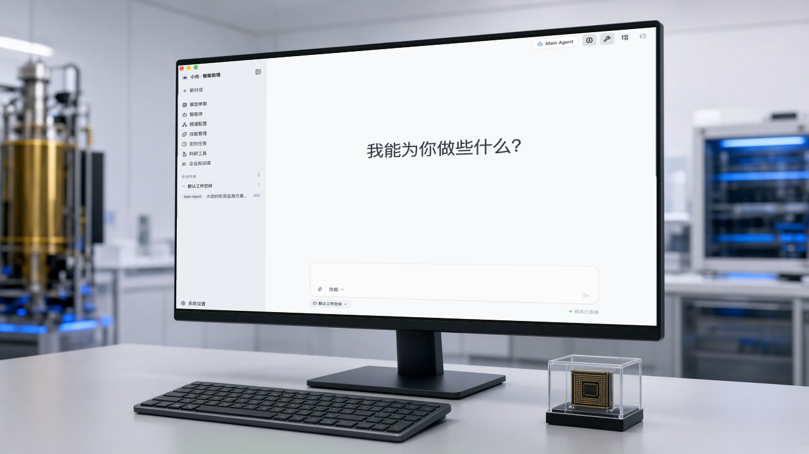
常见入口：
- + 新对话：新开一轮，不沿用上一场上下文。
- 会话列表：按工作空间列出最近对话，可点选继续、重命名或删除。
- 系统设置：在侧栏最底部，不在上面那一组功能里。
顶栏右侧显示 当前对话对象（例如 Main Agent）。思考过程、工具调用过程可用顶栏图标开关。
3. 模型参数
管理 AI 提供商，并查看 Token 用量。至少要有一个 已配置 的默认提供商，对话才能调用模型。
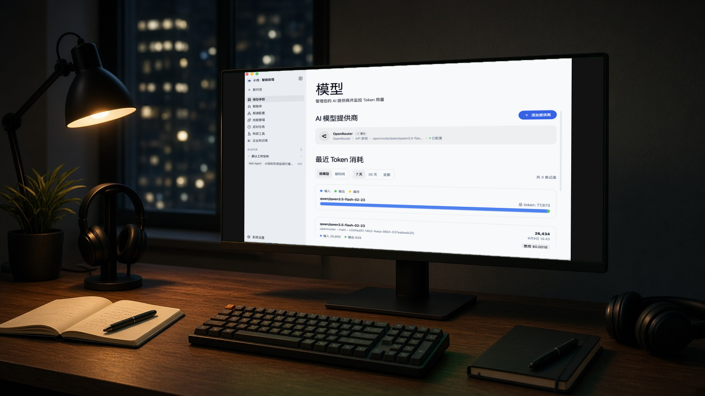
添加提供商：
- 点 + 添加提供商。
- 在列表中选择一家（如 OpenRouter、DeepSeek、阿里云百炼、Ollama 等）。
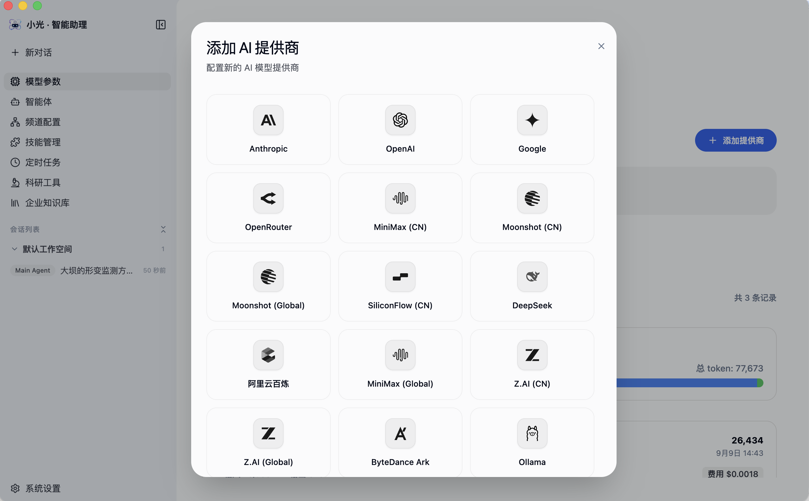
- 按提示填写 API 密钥、模型 ID（及可选的基础 URL）。密钥保存在本机。
- 保存后回到列表，把常用的那一家设为默认。
用量区可切换 7 天 / 30 天 / 全部。费用数字来自提供商回传，仅供核对。
4. 对话
- 点 + 新对话，或在会话列表里打开已有一场。
- 在底部输入框提问。可点回形针附加文件，点 技能 下拉指定本次要用的技能。
- 发送后，回答会出现在中间。若开启了工具过程，会看到检索、调用企业知识库等步骤（成功或失败都会留下记录）。
- 需要换助理时，以顶栏 当前对话对象 为准；也可先到 智能体 里新建或调整后再回来问。
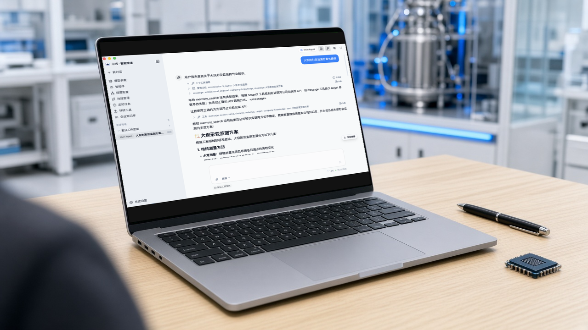
说明：
- 空对话时，中间会显示「我能为你做些什么？」，可直接输入，不必先点快捷项。
- 长回复可点 回到底部 跟上最新内容。
- 生成的文件会出现在回复里，可用系统应用打开，或在访达 / 资源管理器中显示。
5. 技能管理
技能是可开关的能力包（写作润色、会议纪要、周报等）。未启用的技能，对话里即使提到也用不上。
- 侧栏进入 技能管理。
- 用 搜索技能 过滤；用 已开启 / 已禁用 查看状态。
- 每条右侧开关控制启用或停用。点开条目可看说明、版本，必要时填写该技能自己的密钥。
- 需要改技能文件时，点右上角 打开技能文件夹。
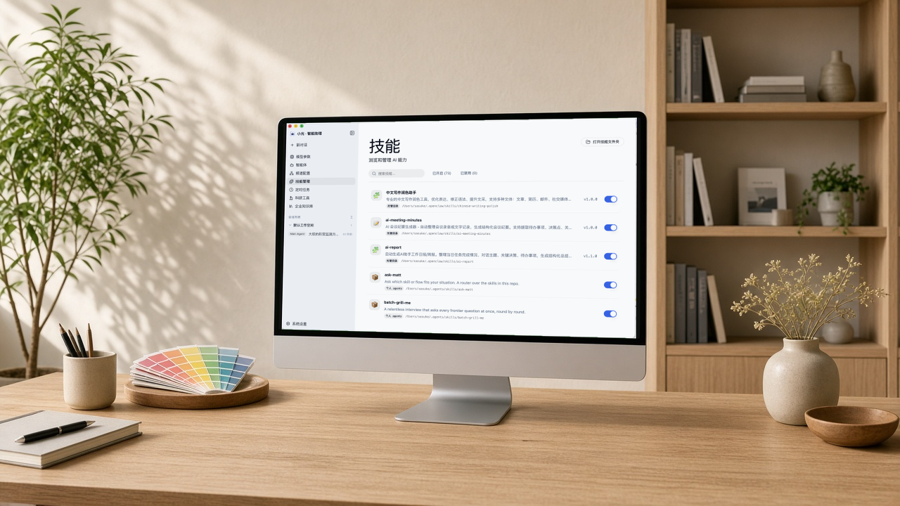
网关未运行时，仍可浏览本地技能，但运行时状态可能不完整。装好或打开开关后，回到对话再发一次请求。
6. 定时任务
用来在指定时刻自动跑一段提示词，结果可留在小光内，或投递到已配置的消息频道。
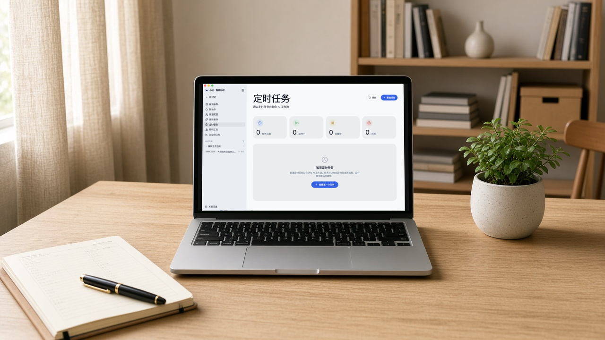
新建时填写：
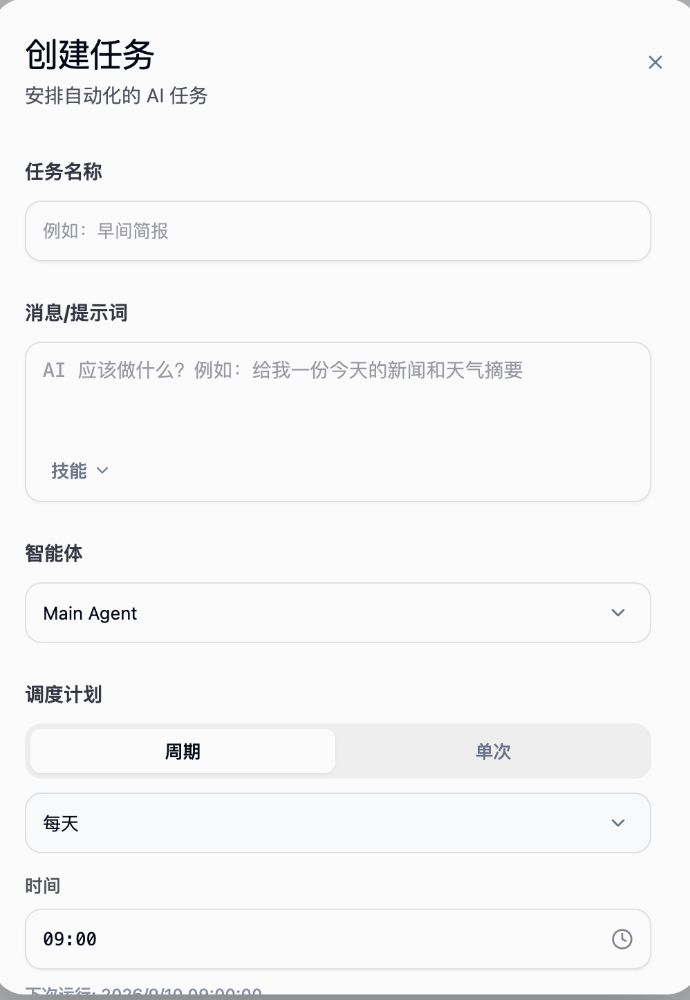
- 任务名称，例如「早间简报」。
- 消息/提示词：写清楚 AI 该做什么；可用 技能 插入快捷技能。
- 智能体：选择由哪个助理执行（默认 Main Agent）。
- 调度计划：周期（每小时 / 每天 / 工作日 / 每周 / 自定义）或 单次；再设 时间。
- 投递设置：仅在小光内保留，或发送到外部通道（需先在 频道配置 里接好账号）。
保存后可 立即运行、暂停或删除。网关未运行时无法管理定时任务。
7. 企业知识库
用来在小光里打开量库（企业知识库管理系统）：看工作台、检索公司文档。绑定之后，对话也可以按公司资料作答。
- 侧栏点 企业知识库。
- 右侧内嵌量库。未登录时先用企业邮箱登录（新账号通常要管理员审批）。
- 在量库工作台点 将知识库绑定到智能办公助理。该按钮只在小光内嵌页面出现，用普通浏览器打开量库没有。
- 绑定成功后，回到 对话 提问即可引用库内资料。改密码后需要重新绑定。
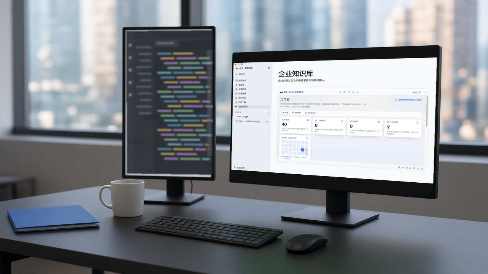
列表、检索和问答都受量库密级约束，看不到高于本人上限的内容。
8. 科研工具
文献检索、实验与数据分析会陆续接到本页。当前可用入口是量子计算实验平台。
- 侧栏进入 科研工具。
- 点卡片上的 登陆量子计算实验平台。
- 在打开的 Quafu 页面登录 SQCLab，再按卡片选择在线的量子处理器。
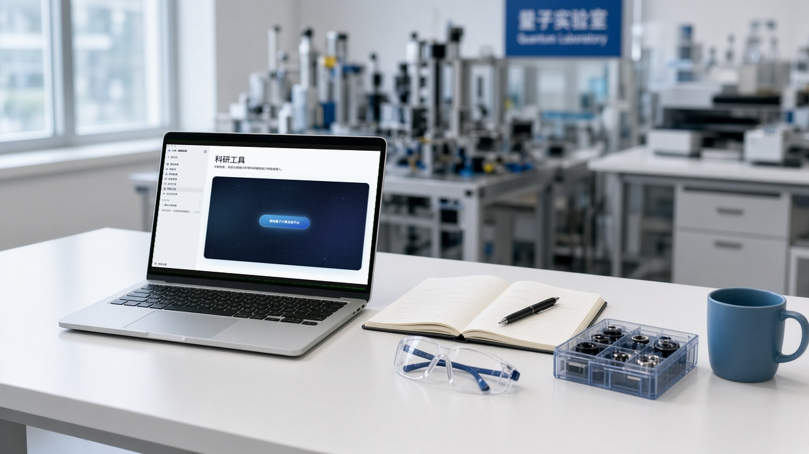
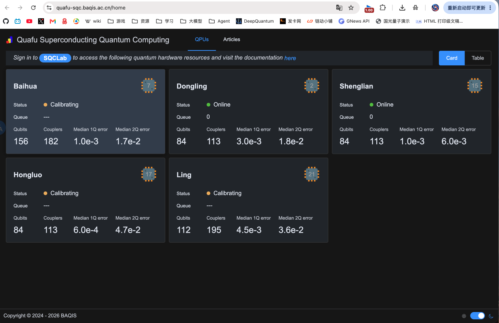
9. 频道配置
把小光接到常用即时通讯，便于在群里问、也便于定时任务往外投递。
当前支持（部分标为「插件」）：
| 频道 | 连接方式（摘要） |
|---|---|
| Telegram | BotFather 提供的 Bot Token |
| Discord | 开发者门户的 Bot Token |
| 扫码（不必填手机号） | |
| 微信 | 腾讯官方插件，扫码连接个人微信 |
| 钉钉 | OpenClaw 频道插件（Stream 模式） |
| 飞书 / Lark | 官方插件连接机器人 |
| 企业微信 | 插件连接企微机器人 |
| QQ Bot | 内置频道（视 OpenClaw 版本） |
点某个频道进入配置。账号可 绑定 Agent、设为频道默认账号。绑定关系以本页为准；智能体 页里的频道列表只读。
网关未运行时无法管理频道。改完配置若状态未刷新，点右上角 刷新，必要时按提示重启网关。
10. 系统设置
侧栏底部进入 系统设置（页面标题为「设置」，副标题为「配置您的 SmartX 体验」）。
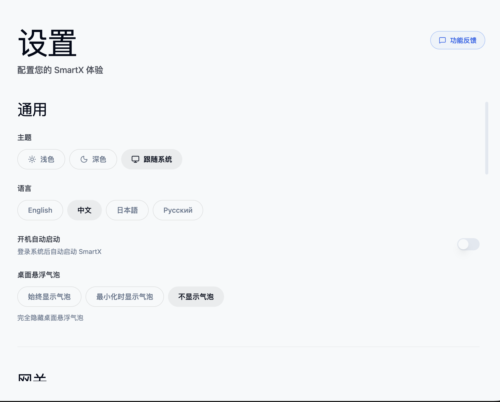
| 项 | 说明 |
|---|---|
| 主题 | 浅色 / 深色 / 跟随系统 |
| 语言 | 中文、English、日本語、Русский |
| 开机自动启动 | 登录系统后自动打开小光 |
| 桌面悬浮气泡 | 始终显示 / 最小化时显示 / 不显示 |
再往下是 网关 等分组，用于查看或启动网关。聊天、定时任务、频道都依赖网关处于运行状态。右上角 功能反馈 用于提交意见，不影响当前配置。
11. 常见问题
Q：对话发不出去，或提示网关未运行？
A：看窗口底栏是否为 网关已连接。到 系统设置 里启动网关，等状态变绿后再试。首次安装请走完向导里的环境检查。
Q：问公司内部的事，回答对不上或没有出处？
A：先在 企业知识库 登录量库，并点 将知识库绑定到智能办公助理。未绑定、未审批、或资料还在处理中，对话都调不到。密级不够的文件也不会出现。
Q：技能列表里有，对话却没用上？
A：确认开关为开启，并在输入框 技能 里选中（或提示词写明要用哪一个）。改开关后重新发一条。
Q：定时任务到点没有结果？
A：确认网关在运行、任务未暂停。若要发到企业微信/飞书，须在 频道配置 接好账号，并在任务的投递设置里选外部通道，而不是「仅在小光内」。
Q：频道保存了但还是连不上？
A：Token / 扫码是否过期；插件类频道是否已按说明安装。保存后刷新页面，必要时重启网关。
Q：换了模型或提示密钥无效？
A：到 模型参数 检查默认提供商是否仍为「已配置」，密钥是否更新。本机保存的密钥不会显示在对话里。
Q：量库里的上传、图谱、密级怎么用？
A：以《量库（企业版）用户说明书》为准。小光只负责打开内嵌页面并完成绑定。